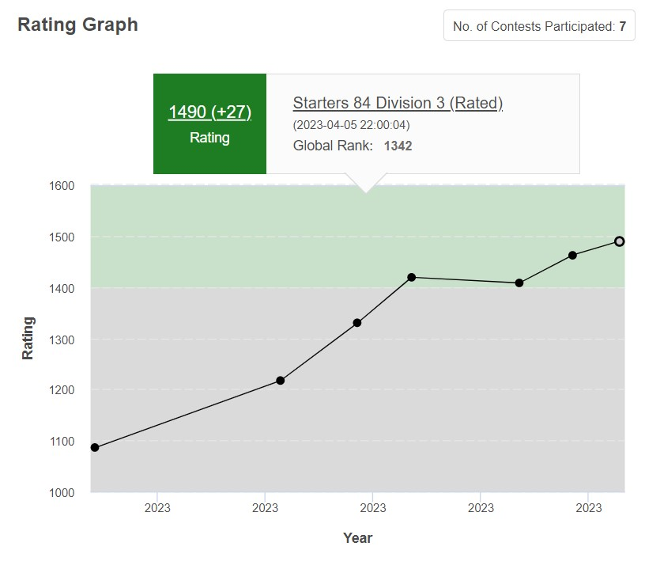

About Me
Hye! My self Naman Malik from the beautiful city of Meerut, Uttar Pradesh! I am Currently pursuing a Bachelor of Engineering degree from Chandigarh University, I'm a skilled programmer with expertise in competitive programming and web development. With a passion for technology and a natural flair for coding, I'm constantly pushing the boundaries of my knowledge and skills to excel in my field. With a strong academic record and a curious mind, I'm a valuable addition to the vibrant and dynamic student community at Chandigarh University./p> Read More
My Achivements
-

- 
Skills
- C/C++
- Java
- Python
- HTML
- CSS
- JavaScript
Project 1
Tic Tac Toe game
This project is a console-based application that allows players to play against each other or against the computer. The game has different levels of difficulty, with the computer making random moves on the easy level and making intelligent moves on the hard level.
The project is implemented using the C++ programming language and incorporates various programming concepts such as conditional statements, loops, and functions. It also utilizes object-oriented programming (OOP) principles to organize the code and make it more modular and scalable.
The game features a simple and intuitive user interface that prompts players to enter their moves and displays the current state of the game board. The application also provides feedback on the winner of each game and allows players to play multiple games in a row.
Overall, my Tic Tac Toe game project is a fun and challenging way to showcase my programming skills and demonstrate my understanding of programming concepts and OOP principles.
Project 2
Library Management System
Library management system project is an application built using the Python programming language that helps automate the various tasks involved in managing a library. The system includes a user-friendly interface that enables librarians to perform various functions such as adding new books, managing user accounts, tracking borrowed books, and generating reports.
The project is implemented using various programming concepts and libraries, such as data structures, file handling, and GUI programming. The application also incorporates various algorithms to search for books and keep track of their availability.
One of the unique features of my library management system project is its ability to generate reports on various library statistics such as the number of books in the library, the number of books borrowed, and the overdue books. This feature helps librarians keep track of the library's performance and make data-driven decisions.
Overall, my library management system project is an efficient and user-friendly solution that helps librarians manage their library collections and services more effectively. The project also demonstrates my programming skills and understanding of various programming concepts and libraries used in the development of the application.